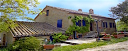
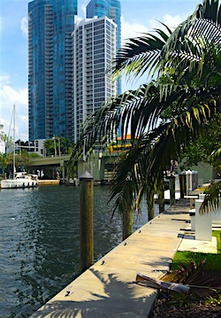
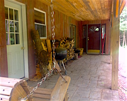
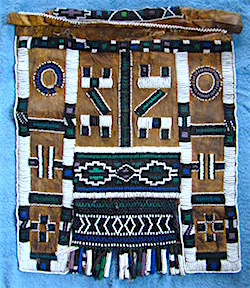

Friends,
I am Will Bontrager, former FOR National Council member, restorative justice practitioner and advocate, auctioneer, farmer, and a lifelong peace activist.
Some of the Centennial silent auction items

An Italian farmhouse vacation (8 days, 7 nights) being offered by Pacific Auctions of California -- the auction hosts who will be featuring many other items commemorating social justice and pacifism.

Vacation for two weeks in this Ft. Lauderdale, Florida, condo courtesy of Lisa Hayes.

A one-week retreat in this Vermont cabin, offered by Rick and Kitty Ufford-Chase.
A print by artist James Groleau, courtesy of the John Lindsay-Poland family.

A South African Ndebele wedding apron from Bayard Rustin's personal art collection.
|
We've done a lot in the past one hundred years.
With your help, FOR is now at a point where we can celebrate the past century of the Fellowship of Reconciliation -- and look forward to the next one.
Together, we can celebrate the beginning of another hundred years of work toward justice, equality and peacebuilding.
To that end, I'd like to personally invite you to join FOR's reception and auction in New York City on Saturday, Nov. 7.
We'll be gathering at The Riverside Church -- a place of great historical importance to both FOR and the larger peace movement.
It was here that Dr. King gave one of his most notable sermons, "Beyond Vietnam" -- penned by FOR member and honorary committee associate Dr. Vincent Harding.
When: Saturday, Nov. 7, 5:30 PM to 7:00 PM
Where: The Riverside Church (South Hall), 490 Riverside Drive, New York, NY
Tickets beginning at $50. Register and reserve your seat now.
The auction will give FOR members and supporters a chance to relax, converse and peruse auction items -- including artwork by FOR members, activist vacation packages, books by faith leaders working for peace, and more.
Wine, beer and hors d'oeuvres will be served.
Register for the Centennial reception now.
I first became aware of FOR's peace work 50 years ago, noting FOR's strong active support for civil rights in the 1960s and their loud voice against the Vietnam war. I was very pleased to become a member of a governing body that welcomed people from a diversity of faiths, ethnicities, races, and sexual orientations.
Now, a half-century later, this reception is an opportunity for us to gather and reflect on the last hundred years -- and support FOR's work into the next hundred through the silent auction.
Some of the featured items are displayed at right.
This is an event you don't want to miss.
Join me in New York by registering for the FOR Centennial celebration today.
Will Bontrager
Founder, Finger Lakes Restorative Justice Center
Shortsville, New York
P.S. We've been so successful over the past century because at key moments, members like you stood up to support our work. If you can't make it to the Centennial celebration in New York, please consider making a special tax-deductible donation to FOR to help push us into the next hundred years!
|